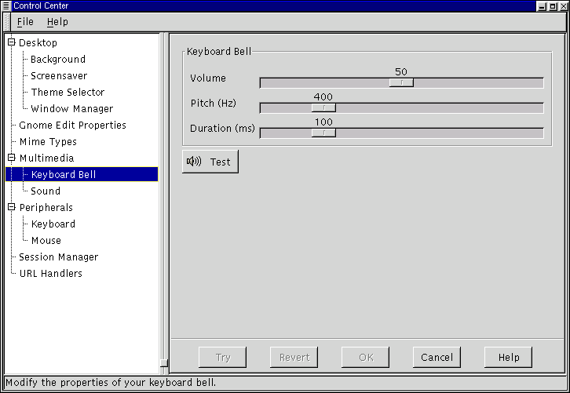

Мультимедиа капплеты
Звонок
Этот капплет позволяет вам установить предупредительный сигнал, издаваемый встроенным в компьютер динамиком при ошибке ввода; этот сигнал также сопровождает многие предупреждения.
Громкость задает громкость сигнала.
На шкале частоты вы можете установить частоту (высоту) сигнала. По умолчанию используется частота 440 Гц ("ля" средней октавы).
Продолжительность задает продолжительность сигнала.
Нажав на кнопку Попробовать, вы можете проверить, как будет звучать сигнал с выбранными вами параметрами.
Рисунок 9-9. Капплет звонок

Капплет настройки звука
Этот капплет позволяет вам настроить звуки, используемые GNOME. Он состоит из двух разделов: общий и звуки событий.
Общий раздел - в этом разделе вы можете включить два режима: Разрешить звуки в GNOME и Разрешить звуки событий. Первый из них включает поддержку звука GNOME (ESD). Если включить режим Разрешить звуки событий, то GNOME будет сопровождать различные "события" (такие, как открытие/закрытие окна) звуками, указанными в разделе Звуки событий.
Раздел "Звуки событий" - в этом разделе вы можете выбрать звуки, сопровождающие различные события.
Чтобы изменить звук, сопровождающий то или иное событие в GNOME, выберите это событие в списке слева и выберите звуковой файл с помощью кнопки Просмотр. Выбрав файл, вы можете нажать кнопку Play, чтобы проверить, как он звучит, и понять, хотите ли вы слышать этот звук каждый раз, когда происходит данное событие.
Рисунок 9-10. Капплет настройки звука